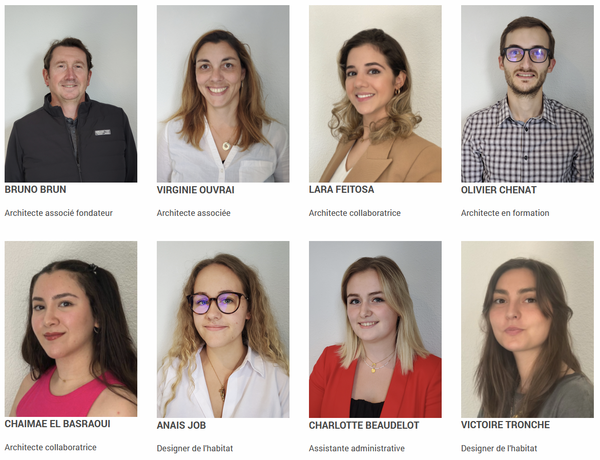

1. Comparaison des Hébergeurs
Dans cet article, je présente une comparaison entre plusieurs hébergeurs que j'ai explorés durant mon stage. Le tableau ci-dessous résume les principales caractéristiques :
| Critère |
IONOS |
OVH |
Hostinger |
| Stockage |
250 Go |
250 Go |
50 Go |
| Domaine + SSL |
Gratuit + Certificat SSL |
Gratuit + Certificat SSL |
10€ + Certificat SSL |
| Coût |
11€/mois |
6,59€/mois |
7,99€/mois |
J'ai utilisé ces hébergeurs pour diverses missions, et chaque option avait ses avantages et inconvénients en fonction des besoins du projet. Étant donné que je connaissais déjà quelques hébergeurs, j'ai pu leur proposer certaines de mes connaissances.
2. Mon Intégration dans l'Entreprise

J'ai commencé par rencontrer les membres de l'équipe et comprendre la culture de l'entreprise, ce qui a été essentiel pour une adaptation réussie. Ces premières interactions m'ont permis de me familiariser avec les valeurs, les attentes et les dynamiques internes du groupe, facilitant ainsi mon intégration. Pour renforcer ce processus, j'ai également participé à plusieurs événements informels, comme des repas d'entreprise et des afterworks. Ces moments de convivialité ont non seulement favorisé des échanges plus détendus avec mes collègues, mais m'ont aussi aidé à tisser des liens solides au sein de l'équipe. Grâce à ces occasions, j'ai pu mieux appréhender les différentes personnalités et créer un environnement de travail collaboratif et harmonieux. Ces initiatives m'ont permis de m'intégrer pleinement et de contribuer de manière positive à l'équipe dès le début de mon stage au sein de l'entreprise d'architecture.
3. Difficultés Rencontrées et Solutions Apportées
Au cours de mon stage, j'ai rencontré plusieurs difficultés techniques, notamment des problèmes d'intégration avec certains outils proposés par le stage. J'ai surmonté ces défis en consultant des ressources spécialisées et en demandant des conseils à mes collègues, notamment sur IONOS et WordPress.
4. Aspect Technique des Missions

Les aspects les plus techniques de mon stage ont consisté à mettre à jour l'ensemble du site internet de l'entreprise, en modifiant certaines parties pour les rendre plus modernes et fonctionnelles. J'ai travaillé sur l'optimisation du site en intégrant des solutions techniques spécifiques, afin d'améliorer l'expérience utilisateur et la performance globale du site. Cet article explore en détail ces missions, en décrivant les solutions que j'ai mises en place et les outils que j'ai utilisés pour les développer. Mon travail a permis de moderniser l'image numérique de l'entreprise tout en répondant aux besoins techniques actuels. Tout cela m'a aidé dans mon avancée vers le développement web.
5. Bilan de Mon Stage
Mon stage au sein de l'agence d'architecture m'a permis de développer et d'acquérir de nouvelles compétences, notamment en utilisant des outils qui me seront très utiles pour mes futurs projets. En particulier, la partie design, que j'avais étudiée en cours, m'a été précieuse pour optimiser le site internet de l'agence. Grâce à ces connaissances, j'ai pu améliorer l'esthétique et la fonctionnalité du site, rendant ainsi l'expérience utilisateur plus fluide et attrayante. De plus, mes connaissances en bases de données, acquises au cours de ma formation, ont également été mises à contribution, notamment pour la gestion des informations et l'optimisation des performances du site.
L'équipe m'a apporté beaucoup de nouvelles connaissances, enrichissant ainsi mon parcours et me permettant de mieux appréhender les défis techniques que j'ai rencontrés. Cependant, il y a eu quelques aspects du stage qui auraient pu être améliorés. Travailler en grande partie à distance a compliqué mon intégration dans l'équipe, même si nous avons su surmonter cet obstacle avec des efforts communs. De plus, certains des outils proposés n'étaient pas à jour, ce qui a parfois ralenti mon travail. Pour l'avenir, il serait bénéfique pour moi d'apprendre à maîtriser plus rapidement les nouveaux outils afin de pouvoir m'adapter plus efficacement à différentes situations.
En conclusion, ce stage a été une expérience enrichissante tant sur le plan technique que personnel, et il a renforcé mon intérêt pour le développement web et l'architecture numérique.